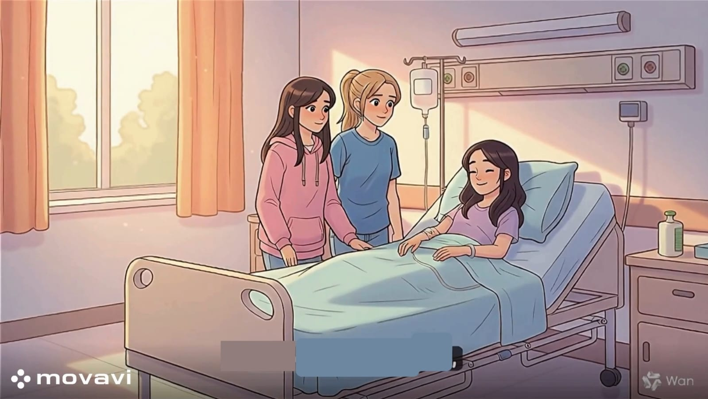

زيارة المريض
بعد الانتهاء من تدريس هذا الدرس يفترض أن يكون التلميذ قادرًا على:
أن يستنتج آداب زيارة المريض الأساسية (الاستئذان، خفض الصوت، عدم الإطالة).
أن يُميز بين أثر "الزائر المزعج" و "الزائر اللطيف" على نفسية المريض.
أن يُظهر تعاطفاً مع المريض بتقدير حاجته للراحة والهدوء.
أن يتدرب على قول دعاء قصير للمريض وتقديم الدعم النفسي له بشكل لائق.

نشاط (1):
الموقف:
علمت أن زميلك "عمر" مريض في منزله، وأردت الذهاب لزيارته مع والدك.
1. قبل الذهاب، ماذا يجب أن نفعل؟ (هل نذهب فجأة أم نتصل للاستئذان وتحديد موعد؟).
2. لماذا لا نختار وقتًا متأخرًا من الليل للزيارة؟
3. إذا أخبرتنا والدة عمر أنه نائم الآن، ماذا يكون ردنا؟
نشاط (2):
الموقف :
أنت الآن في غرفة صديقك المريض لتطمئن عليه.
1. كم من الوقت يجب أن تقضي عنده؟ (زيارة قصيرة أم نجلس طوال اليوم؟).
2. كيف يجب أن يكون صوتك في الغرفة؟ (عالٍ ومرح بشدة أم هادئ ومنخفض؟).
3. لعب أدوار: مثل مع زميلك كيف تدخل الغرفة، أين تجلس، وكيف تودعه بابتسامة.
نشاط (3):
الموقف :
صديقك يبدو شاحبًا ومريضَا بسبب الأنفلونزا.
1. أي العبارات التالية أفضل لقولها للمريض؟
- "يا إلهي! وجهك يبدو متعبًا جدًا وصفرًا."
- "شفاك الله وعافاك يا صديقي، ستعود للمدرسة قريبًا وتلعب معنا."
2. لماذا نختار الكلمات الإيجابية عند زيارة المريض؟
3. ماذا تفعل إذا رأيت المريض يحتاج للراحة أو النوم أثناء جلوسك؟
نشاط (4):
الموقف :
قرر الفصل أن يرسل "بطاقة أمنيات" لزميلهم الذي سيجري عملية جراحية.
1. اذكر جملة واحدة قصيرة داخل البطاقة تشجع بها زميلك.
2. فكر في هدية بسيطة ومناسبة للمريض: (هل نأخذ ألعاباً مزعجة أم قصصاً هادئة أو وردة؟).